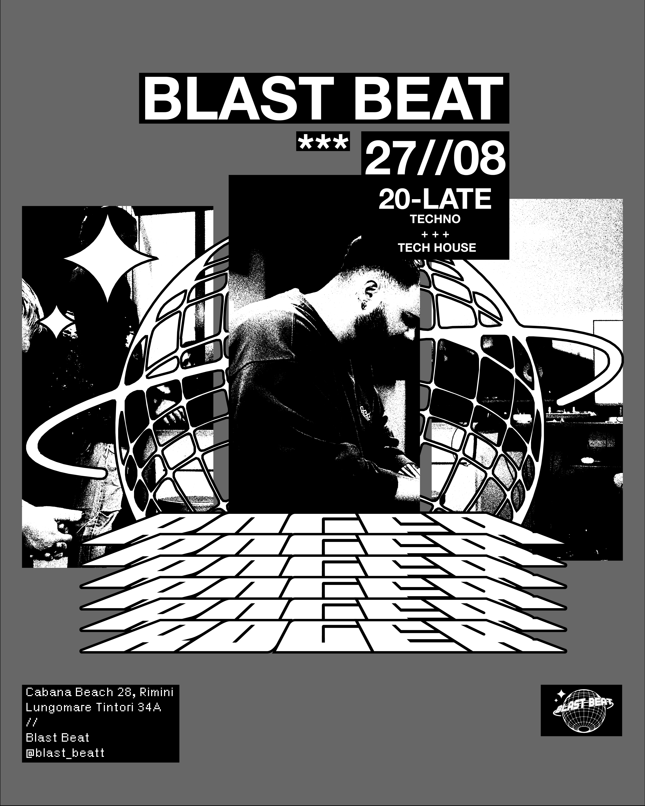
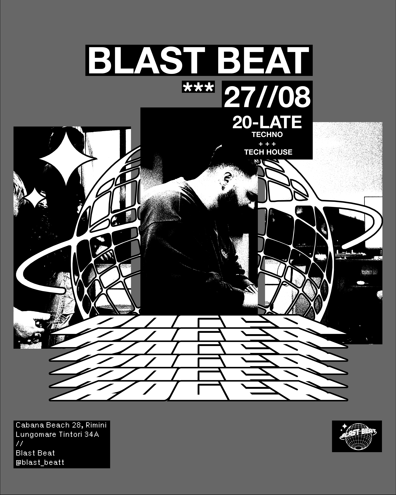

About.
Nasco il 29 Giugno del 2004 a Rimini, famosa località balneare.
Fin da piccolo ho percepito la vicinanza al mare come un vero e proprio privilegio:
è un orizzonte che non stanca mai, una costante che accompagna ogni stagione della mia vita.
Sono fortemente convinto che la presenza di questo elemento naturale favorisca in maniera notevolmente positiva non solo ciò che riguarda il processo creativo, bensì la qualità della vita dei suoi abitanti.
Il mio primo approccio al mondo del design avvenne nel 2022 quando, quasi per gioco, decisi di scaricare la versione di prova di Photoshop:
da quell'esperienza è nata una crescente passione per la comunicazione grafica, cosa che mi ha spinto ad intraprendere questo percorso.

Crescere a Rimini ha significato vivere con il mare come riferimento quotidiano, una presenza capace di modellare il mio modo di osservare e immaginare.
Ogni estate lavoro come bagnino, passare così tante ore sulla spiaggia, immerso nell’orizzonte e nel suo movimento continuo, ha influenzato profondamente il mio approccio al design: la calma del mattino, la forza dei giorni di vento, lo spazio aperto, ma mai vuoto sono elementi che ritornano nella mia idea di composizione grafica ed equilibrio visivo.
Talvolta porto con me la fotocamera mentre lavoro, mi piace catturare scorci dell’ambiente, momenti spontanei delle persone e attimi quotidiani dei miei colleghi: un archivio visivo che arricchisce i miei processi creativi.
Il mare, così, diventa anche un luogo di documentazione oltre che di ispirazione.


TonyKrueger.
Tony Krueger nasce nel gennaio 2023, quando decido di aprire una pagina Instagram dedicata alle grafiche che realizzavo in modo amatoriale, basandomi sulle conoscenze limitate di cui disponevo in quel periodo.
Lo pseudonimo trae origine da un episodio risalente agli anni del liceo, durante una lezione di tedesco in cui affrontammo come argomento d'esame l'opera di Thomas Mann Tonio Kröger.
Il nome "Tony Krueger" non è altro che una reinterpretazione, o meglio una lieve storpiatura, del titolo del celebre racconto dello scrittore tedesco.
Mi è sempre piaciuta l'idea di avere un alter ego.
Works.
Posters.
Una selezione di lavori che indagano il potenziale comunicativo dell’immagine e della tipografia. Ogni composizione nasce come esercizio di equilibrio visivo, dove il layout diventa strumento narrativo e il messaggio si costruisce attraverso ritmo, forma e contrasto.
 

Flyers.
Locandine progettate per eventi, pensate per catturare l’attenzione in pochi istanti. L’approccio combina una grafica diretta e sperimentale con soluzioni visive capaci di trasmettere l’atmosfera e l’identità dell’evento.